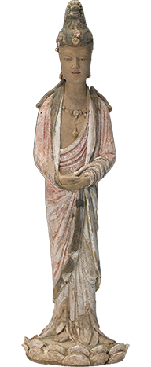

WENZHOU MUSEUM · PAGODA ARCHIVE / 2026
温州博物馆 · 白象塔数字叙事空间
I / 塔影
看见消失之物
不去伪造一座完整佛塔。用旧照片、结构线和真实残件，让观众理解一座建筑如何从城市天际线进入博物馆档案。
拖动下方时间层：线条代表证据，影像代表记忆，“现在”代表我们正在如何解释它。
数字叠合
II / 万象
在面容上读时间
四十二身北宋彩塑，不只构成宏大的佛像群。眉眼的细小起伏、衣袖的转折、颜料的剥落，都是宋代温州工匠留下的证据。
选择一件器物，查看它在空间叙事中的角色。所有影像保留残缺与修复痕迹。

彩塑观音菩萨立像
北宋 · 塑绘结合 · 矿物颜料
III / 经声
让一行字重新被读到
白象塔中的佛经、木舍利塔和印刷残页把观看尺度压到纸与木的纤维。光带扫过经卷时，观众不是在“浏览信息”，而是在辨认文字如何被留下。
移动滑块展开卷面。红色只标出版式节点，不改变原文色彩。
起
终
IV / 归城
把塔还给城市
白象塔曾经属于寺院、水路和城市生活。离场不是回到入口，而是把刚才看见的细节制成一枚愿印，带回今天。
输入四个字，生成你的数字印记。数据不会上传。
留下一枚愿印
可从心中选择四个字，生成后仅保存在你的设备。